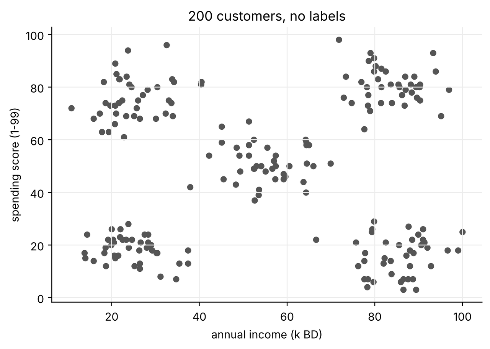
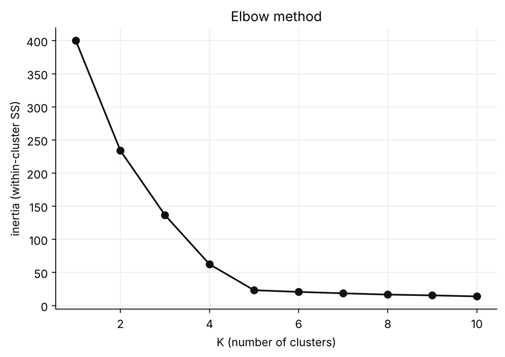
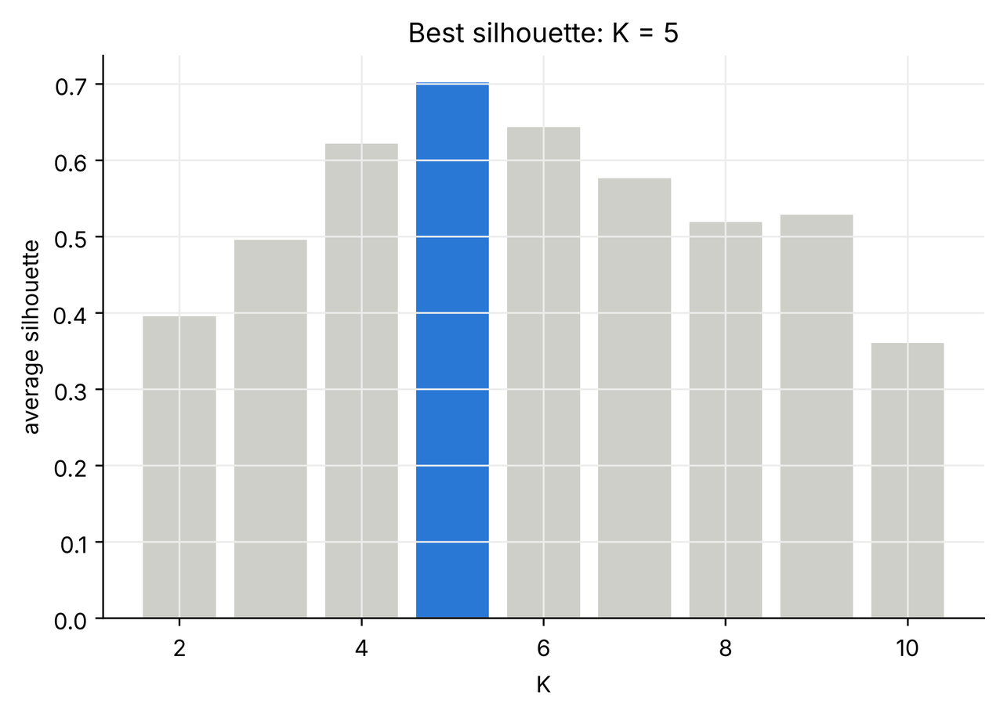
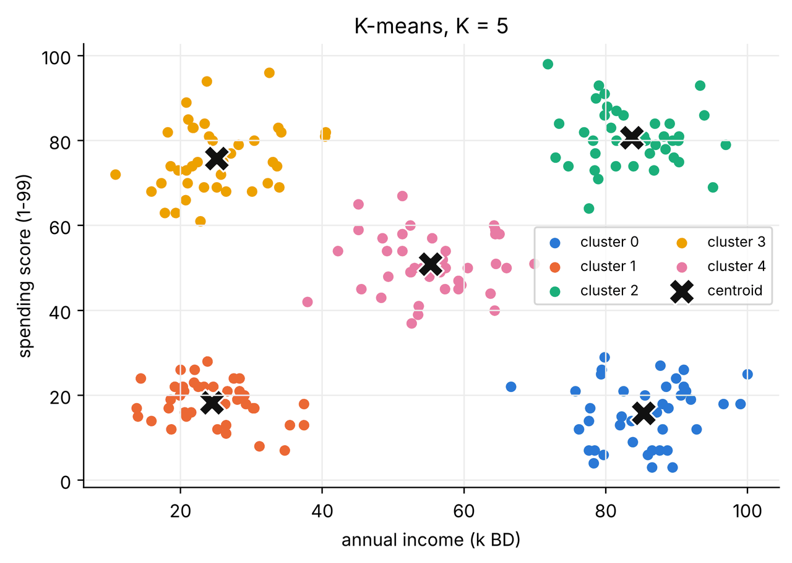
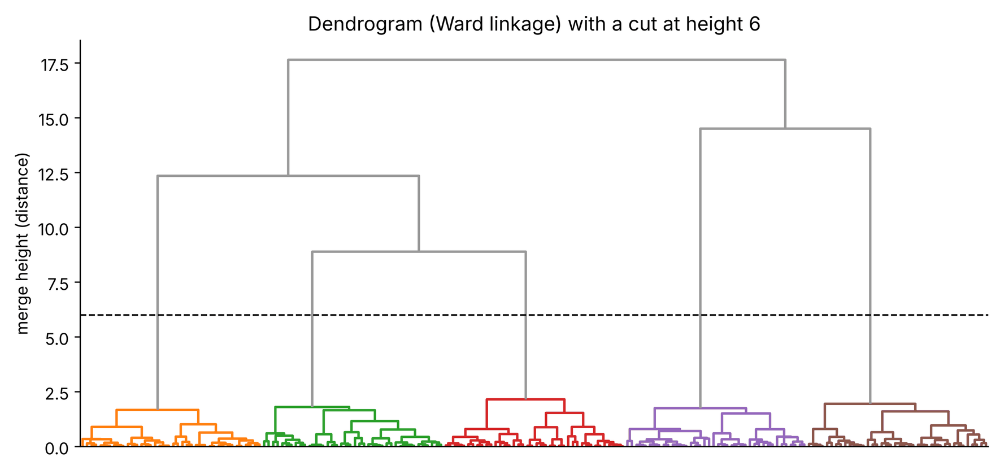
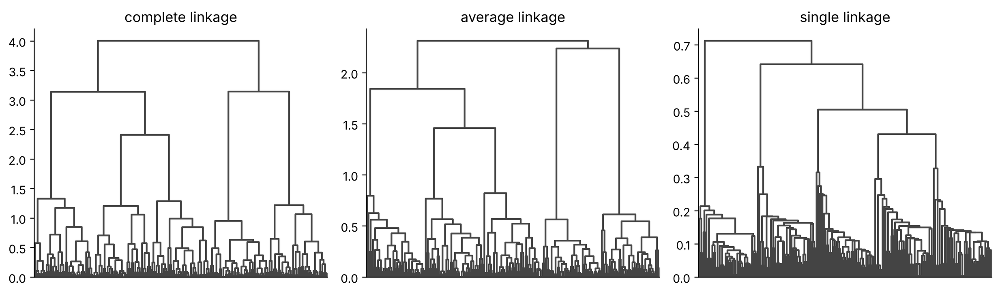

Practice · Clustering in Python
Clustering in Python, line by line.
A complete, runnable notebook that segments 200 shop customers with K-means and hierarchical clustering. You will scale the data, choose K with the elbow and silhouette methods, read the clusters, and build a dendrogram. Hover over (or tap) any line of code to see what it does.
1 Hover over or tap any numbered line of code to highlight its explanation. Every output and chart below was produced by running this exact notebook.
1Import the libraries
We need NumPy for maths, pandas for tables, Matplotlib for charts, scikit-learn for scaling and K-means, and SciPy for the dendrogram.
- %config InlineBackend.figure_format = "retina"1
- import numpy as np2
- import pandas as pd3
- import matplotlib.pyplot as plt4
- from sklearn.preprocessing import StandardScaler5
- from sklearn.cluster import KMeans6
- from sklearn.metrics import silhouette_score, adjusted_rand_score7
- from scipy.cluster.hierarchy import linkage, dendrogram, fcluster8
-
- plt.rcParams["figure.figsize"] = (7, 4.5)9
- plt.rcParams["axes.spines.top"] = False10
- plt.rcParams["axes.spines.right"] = False10
- plt.rcParams["axes.grid"] = True11
- plt.rcParams["grid.color"] = "#ececec"11
- COLORS = ["#2a78d6", "#eb6834", "#1baf7a", "#eda100", "#e87ba4", "#008300"]12
2Load the dataset
The file records 200 customers of a shopping mall: their age, annual income (thousands of BD) and a spending score from 1 to 99 that the mall gives each customer based on how much they buy. There is no answer column: nobody has told us which "type" each customer is. That is what we want to discover.
- url = "https://raw.githubusercontent.com/SaeedSerwan/unsupervised/main/data/customers.csv"1
- df = pd.read_csv(url)2
- print("Rows and columns:", df.shape)3
- df.head()4
Rows and columns: (200, 4)
| customer_id | age | annual_income_k | spending_score | |
|---|---|---|---|---|
| 0 | 1 | 30 | 18.6 | 74 |
| 1 | 2 | 21 | 28.0 | 19 |
| 2 | 3 | 33 | 83.6 | 81 |
| 3 | 4 | 40 | 82.0 | 13 |
| 4 | 5 | 37 | 19.7 | 73 |
3Explore the data
Always look before you cluster. Summary statistics tell us the scale of each column; a scatter plot shows whether groups are visible.
- df.describe().round(1)1
| customer_id | age | annual_income_k | spending_score | |
|---|---|---|---|---|
| count | 200.0 | 200.0 | 200.0 | 200.0 |
| mean | 100.5 | 33.7 | 54.8 | 48.3 |
| std | 57.9 | 9.6 | 27.6 | 28.4 |
| min | 1.0 | 18.0 | 10.8 | 3.0 |
| 25% | 50.8 | 26.0 | 26.4 | 20.0 |
| 50% | 100.5 | 33.0 | 54.6 | 50.0 |
| 75% | 150.2 | 41.0 | 81.5 | 75.0 |
| max | 200.0 | 64.0 | 100.0 | 98.0 |
- fig, ax = plt.subplots()1
- ax.scatter(df["annual_income_k"], df["spending_score"], s=22, color="#555")2
- ax.set(xlabel="annual income (k BD)", ylabel="spending score (1-99)",3
- title="200 customers, no labels")3
- plt.show()4

Our eyes can probably see about five groups. Let us see whether K-means agrees, without telling it anything except the numbers.
We cluster on income and spending score only, so every result can be drawn in 2D. With more columns the code is identical; only the plots change.
4Standardise the features
K-means uses Euclidean distance, so a column with bigger numbers would get a bigger vote. StandardScaler subtracts each column's mean and divides by its standard deviation, so both columns count equally.
- X = df[["annual_income_k", "spending_score"]].to_numpy()1
- scaler = StandardScaler()2
- X_scaled = scaler.fit_transform(X)3
- print("Means after scaling:", X_scaled.mean(axis=0).round(3))4
- print("Std after scaling: ", X_scaled.std(axis=0).round(3))5
Means after scaling: [-0. -0.] Std after scaling: [1. 1.]
5Choose K: the elbow method
Fit K-means for K = 1 … 10 and record the inertia: the total squared distance of points to their own centroid (the lecture's objective, without the factor 2). It always falls as K grows, so we look for the elbow where it stops falling fast.
- ks = range(1, 11)1
- inertias = []2
- for k in ks:3
- km = KMeans(n_clusters=k, n_init=10, random_state=0)4
- km.fit(X_scaled)5
- inertias.append(km.inertia_)6
-
- fig, ax = plt.subplots()7
- ax.plot(ks, inertias, "o-", color="#111")8
- ax.set(xlabel="K (number of clusters)", ylabel="inertia (within-cluster SS)", title="Elbow method")9
- plt.show()10

The curve drops steeply until K = 5, then flattens: adding more clusters stops paying off. That is the elbow.
6Choose K: the silhouette score
For each point the silhouette compares its average distance to its own cluster ($a$) with its average distance to the nearest other cluster ($b$): $s = (b - a) / \max(a, b)$. Values near 1 mean well-separated clusters. We pick the K with the highest average.
- sil = {}1
- for k in range(2, 11):2
- labels = KMeans(n_clusters=k, n_init=10, random_state=0).fit_predict(X_scaled)3
- sil[k] = silhouette_score(X_scaled, labels)4
-
- best_k = max(sil, key=sil.get)5
- fig, ax = plt.subplots()6
- ax.bar(list(sil), list(sil.values()), color=["#2a78d6" if k == best_k else "#cfcfca" for k in sil])7
- ax.set(xlabel="K", ylabel="average silhouette", title=f"Best silhouette: K = {best_k}")8
- plt.show()9

Both methods point to K = 5. When two different tools agree, we can be more confident.
7Fit K-means with K = 5
- kmeans = KMeans(n_clusters=5, n_init=10, random_state=0)1
- df["cluster"] = kmeans.fit_predict(X_scaled)2
- centres = scaler.inverse_transform(kmeans.cluster_centers_)3
- print("Inertia:", round(kmeans.inertia_, 2))4
- print("Customers per cluster:", np.bincount(df["cluster"]))5
Inertia: 23.19 Customers per cluster: [40 40 40 40 40]
- fig, ax = plt.subplots()1
- for c in range(5):2
- pts = df[df["cluster"] == c]3
- ax.scatter(pts["annual_income_k"], pts["spending_score"], s=24, color=COLORS[c], label=f"cluster {c}")4
- ax.scatter(centres[:, 0], centres[:, 1], marker="X", s=220, color="#111", edgecolor="white", label="centroid")5
- ax.set(xlabel="annual income (k BD)", ylabel="spending score (1-99)", title="K-means, K = 5")6
- ax.legend(fontsize=8, ncol=2)7
- plt.show()8

8Describe each segment
Clusters only become useful when a human interprets them. The average of each column per cluster tells us who is in it.
- summary = df.groupby("cluster")[["age", "annual_income_k", "spending_score"]].mean().round(1)1
- summary["customers"] = df["cluster"].value_counts().sort_index()2
- summary3
| age | annual_income_k | spending_score | customers | |
|---|---|---|---|---|
| cluster | ||||
| 0 | 41.0 | 85.3 | 15.8 | 40 |
| 1 | 28.6 | 24.4 | 18.3 | 40 |
| 2 | 30.1 | 83.7 | 80.7 | 40 |
| 3 | 26.1 | 25.1 | 75.8 | 40 |
| 4 | 42.8 | 55.3 | 50.9 | 40 |
Reading the table, we might name them: careful earners (high income, low spending), big spenders (high income, high spending), average customers, careful budgets (low income, low spending) and young enthusiasts (low income, high spending). The names are our interpretation, not the algorithm's: K-means only says 0, 1, 2, 3, 4.
9Local minima: why `n_init` matters
With a single random start, K-means can get stuck. Run it five times with n_init=1 and compare the objective.
- for seed in range(5):1
- km = KMeans(n_clusters=5, n_init=1, init="random", random_state=seed).fit(X_scaled)2
- print(f"start {seed}: inertia = {km.inertia_:.2f}")3
start 0: inertia = 23.19 start 1: inertia = 23.19 start 2: inertia = 62.27 start 3: inertia = 23.19 start 4: inertia = 59.94
Different starts can stop at different local minima with a worse (higher) inertia. That is why scikit-learn runs several starts and keeps the best.
10Hierarchical clustering: the dendrogram
SciPy's linkage performs agglomerative clustering and records every merge. dendrogram draws the tree.
- Z = linkage(X_scaled, method="ward")1
- fig, ax = plt.subplots(figsize=(10, 4.5))2
- dendrogram(Z, ax=ax, no_labels=True, color_threshold=6,3
- above_threshold_color="#999")3
- ax.axhline(6, color="#111", linestyle="--", linewidth=1)4
- ax.set(ylabel="merge height (distance)", title="Dendrogram (Ward linkage) with a cut at height 6")5
- ax.grid(False)6
- plt.show()7

Reading the tree: the long vertical gap just below the dashed line means the five groups underneath are well separated. Cutting there gives five clusters. Remember the rule: similarity is the height where branches join, not how close leaves are along the bottom.
- df["hc"] = fcluster(Z, t=5, criterion="maxclust")1
- print(pd.crosstab(df["cluster"], df["hc"]))2
- print("Adjusted Rand index:", round(adjusted_rand_score(df["cluster"], df["hc"]), 3))3
hc 1 2 3 4 5 cluster 0 0 0 0 0 40 1 40 0 0 0 0 2 0 0 0 40 0 3 0 0 40 0 0 4 0 40 0 0 0 Adjusted Rand index: 1.0
11Linkage changes the tree
The same data with three other linkages. Notice single linkage's staircase of one-point merges.
- fig, axes = plt.subplots(1, 3, figsize=(12, 3.6))1
- for ax, method in zip(axes, ["complete", "average", "single"]):2
- dendrogram(linkage(X_scaled, method=method), ax=ax, no_labels=True, color_threshold=0, above_threshold_color="#444")3
- ax.set_title(f"{method} linkage")4
- ax.grid(False)5
- plt.tight_layout()6
- plt.show()7

12Summary
| Step | Code |
|---|---|
| Scale | StandardScaler().fit_transform(X) |
| K-means | KMeans(n_clusters=K, n_init=10).fit_predict(X_scaled) |
| Choose K | elbow on inertia_; silhouette_score |
| Centroids in real units | scaler.inverse_transform(kmeans.cluster_centers_) |
| Tree | linkage(X_scaled, method="ward"), dendrogram(Z) |
| Cut the tree | fcluster(Z, t=K, criterion="maxclust") |
13Exercises
- Add
ageas a third clustering feature. Does the best K change? - Run the K-means cell without
StandardScaler. Which feature dominates, and why? - Replace
"ward"with"single"in the dendrogram and cut it into 5 clusters. Compare with K-means using the adjusted Rand index. - Give each of the five segments a marketing action. Which segment would you target first?